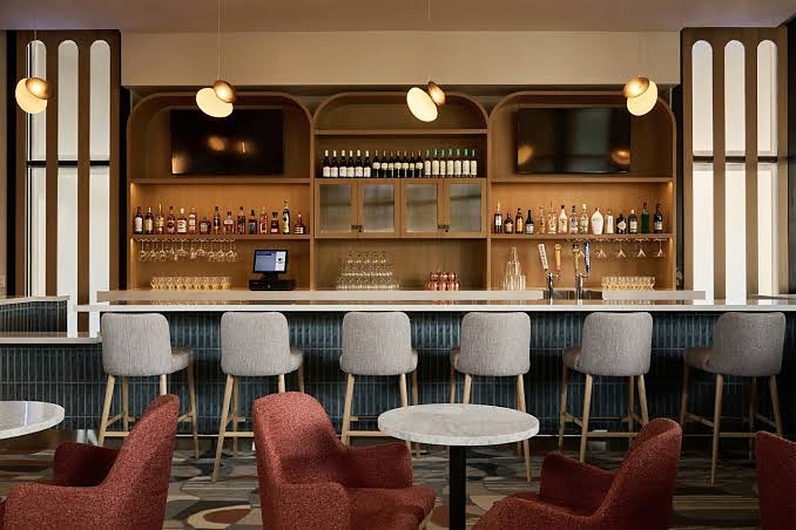

Photograph: Onyango George / EA Hospitality Pulse
Kenya's hotels are arguing about the drinking age. The clause that closes the bar says "restaurant".
On 23 November a joint hospitality memorandum reached Parliament Buildings opposing Kenya's new alcohol Bill. Almost all of it argues about raising the drinking age from 18 to 21. The clause that would strip the licence from a hotel's dining room is a list of premises, and no version of that list published so far contains the word hotel.
Michael Kiragu Muthami came to Parliament Buildings on 23 November with a joint memorandum and an argument about young men. The chairman of the Pubs, Entertainment and Restaurants Association of Kenya had the publicans, the hotel workers' union, student leaders and the boda boda riders behind him, and the line he chose to lead with was about conscription. "We are against the increase of the drinking age from 18 to 21," he said. If a Kenyan is old enough to carry a gun for the country, the reasoning ran, he is old enough to be served.
It is a good line and it will probably work, because the drinking age is the part of this Bill that the public can argue about. It is also the wrong fight for a hotelier to be having.
The Alcoholic Drinks and Drugs Control Laws (Amendment) Bill, 2026 was published in the Kenya Gazette Supplement on 18 September and appeared in the National Assembly's order of business on the afternoon of Thursday 5 November, under Speaker Moses Wetang'ula, in a sitting recorded as Volume V, Number 101. It is backed by the Majority Leader, Kimani Ichung'wah, who has defended the age clause on the grounds that young people are "still very young and unable to make conscious decisions". Reporting puts it at first reading on that Thursday. From there it goes to a House committee for public views, then to the Senate, because it touches county licensing.
The age change is clause 3(c), which replaces "eighteen" with "twenty-one", with matching amendments reported at sections 13, 21 and 24. Everybody has read that bit. The clause that decides whether a Kenyan hotel still has a beverage business is section 12, and it is not a rate or an age. It is a list.
Section 12 would bar a county licensing committee from granting a licence for alcohol sales in named premises. As the list has been reported, in substantially the same form by four separate outlets, it covers restaurants, universities, colleges and other institutions of higher learning, residential premises, schools, outlets selling children's merchandise, public beaches, public parks, amusement parks, cinemas, hospitals, medical facilities, sports facilities, bus parks, bus stops, petrol stations, railway stations, ferry stations, piers and public transport. Supermarkets go on it too, which is the version of the story that made the headlines on 6 November.
Read that list for what is absent. There is no hotel on it. There is no bar on it either, which the technology site Tech-ish noticed early and nobody in the hospitality submission appears to have picked up: the clause names the restaurant and leaves the bar alone.
For a supermarket chain that distinction is clean. For a hotel it is incoherent, and the incoherence is expensive. A Kenyan three-star in Nakuru or a tented camp outside Narok does not run a bar and a restaurant as two businesses. It runs one beverage operation, with one stock ledger, one set of staff moving between the terrace and the dining room, and in most cases one licence covering the premises. Ask which of those rooms is the restaurant and you are asking a question the accounts cannot answer, because the answer changes at seven in the evening when the tables fill. The Bill would make that question determinative of whether the licence exists at all, and it would hand the answer to a county committee newly co-chaired by a governor and a county commissioner.
Muthami, to his credit, put his finger on exactly this, in the shortest thing he said all day. "Which restaurant can you go to and not be served?"
That is not a rhetorical flourish. It is a drafting objection, and it is the only one in the memorandum that would survive contact with a parliamentary draftsman, because it cannot be answered by softening a number. Everything else the sector brought to Parliament Buildings asks for a different figure. The union wants 18 kept. The riders want the transport window widened. The air operators want airport lounges and duty free carved out. All of that is negotiable, which is another way of saying all of it can be conceded in part and still leave section 12 standing. A definition is not negotiable in the same way. Either the Bill says what a restaurant is, and whether a hotel's dining room is one, or a licensing officer in Kajiado decides it in 2027 with nothing to go on.
The historical irony is worth a paragraph because it tells you the direction of travel. In December 2010, under the alcohol rules then coming into force, Business Daily ran the headline "Hoteliers big winners in new alcohol control rules", and the reason was that hotels, restaurants and members-only clubs were to be allowed to sell alcohol round the clock while everyone else was squeezed. That was the shape of every Kenyan alcohol crackdown for a generation: restrict the informal trade, protect the licensed and the taxed, and watch volume migrate into premises with a till and a VAT number. Hospitality has been the beneficiary of alcohol control in this country for sixteen years. The 2026 Bill is the first one that puts the licensed dining room on the prohibited list alongside the petrol station.
The numbers the sector brought along do not help it, and they deserve to be reported honestly rather than repeated. On 24 November, the Star and Citizen Digital both carried Muthami putting roughly 10,000 outlets at risk of closure and about 30,000 jobs directly at risk, with an annual economic impact of some 8.46 billion shillings. On 25 November, the Standard carried the same association, in the same week, on the same Bill, with 5,643 outlets exposed to closure, 28,213 jobs at risk and 8.46 billion shillings described instead as annual salary losses. The 8.46 billion is doing two different jobs in two different sentences. The outlet count has moved by four thousand. A committee clerk reading both versions will discount the lot, and a sector that wants a drafting change rather than a headline should be embarrassed about handing them the excuse.
What the submission did get right is that the damage is not confined to the bar ledger. MalcomX, a student leader at Multimedia University, made the point nobody from the employers' side made as well: "Students pursuing courses such as hospitality, food and beverages go to these establishments for attachments and jobs." Kenya trains its hospitality workforce through attachment in licensed premises. Raise the floor to 21 and a first-year catering student cannot legally be admitted to the room she is being trained to work in, which is a labour pipeline problem that arrives three years before the staffing shortage it causes.
Then there is the stack of smaller clauses, each of which is a line item. The Bill as reported bans alcohol sales through online platforms, courier services, home delivery, hawking and vending machines, which removes a channel that grew through the pandemic and has been quietly carrying resort and city-hotel beverage volume ever since. It restricts distribution to the hours between six in the morning and six in the evening, a window Elly Kegode of the Kenya Riders and Owners Bodaboda Sacco summarised plainly: "The Bill prohibits transportation of alcohol from 6am to 6pm." For a lodge seven hours from its supplier on a road that is only reliable in daylight, a daylight-only delivery rule is not an inconvenience, it is a change to par levels and to working capital.
It adds a levy of two shillings a litre on everything manufactured or imported, payable to the Kenya Revenue Authority by the tenth of the following month with a three per cent monthly penalty on late payment. Two shillings a litre is nothing. The monthly return is not nothing, and it lands on properties that are already filing a tourism levy, a catering levy and, in Zanzibar's case next door, a fiscalised booking system. It bans online promotion of any alcohol brand element outright, in the Bill's own words: "A person shall not promote or advertise an alcoholic drink or any alcohol related brand element online." Every sundowner photograph on a camp's Instagram feed is inside that sentence. And it states, flatly, that "A person shall not consume any alcoholic drink in a public place", which for a beach hotel on the Kenyan coast raises the question of where the public place ends and the property begins, a line that on most Kenyan beaches has never been surveyed.
Existing licence holders in affected premises would get three months from commencement, or until their licence expires, whichever comes first. The Act takes effect fourteen days after gazettement. A camp that renews in February would discover the answer to the restaurant question with weeks of notice.
There is a working model of the alternative two hundred miles south. Zanzibar restricts alcohol sale by premises and locality, and its regime does the thing the Kenyan Bill does not: it names the tourism establishment as the licensed category, so that the hotel knows it is the exception rather than hoping to be read into one. Zanzibar's approach has plenty of problems, and the islands' operators will tell you about all of them. Uncertainty about whether the dining room is licensed is not among them.
None of this is an argument that Kenya should not control alcohol, and the public health case for doing something about the under-21 market is not the weak part of this Bill. The weak part is that it was drafted as retail policy and will be applied to a tourism industry that was not in the room when the premises list was written. Nobody at Parliament Buildings on 23 November asked for the word restaurant to be defined. They asked for the age to stay at 18, which is the fight they will win, in a Bill whose section 12 will pass unamended while they are winning it.
Operators with three weeks of committee stage left should write one paragraph, not a memorandum. Ask for a definition of restaurant that excludes a dining room within a licensed accommodation facility, or ask for hotels and tourism establishments to be added to section 12 as an express exception. It is a smaller request than anything the sector has made so far, and it is the only one that matters.
📣 Telegram 💬 WhatsApp 💼 LinkedIn 📚 All guides